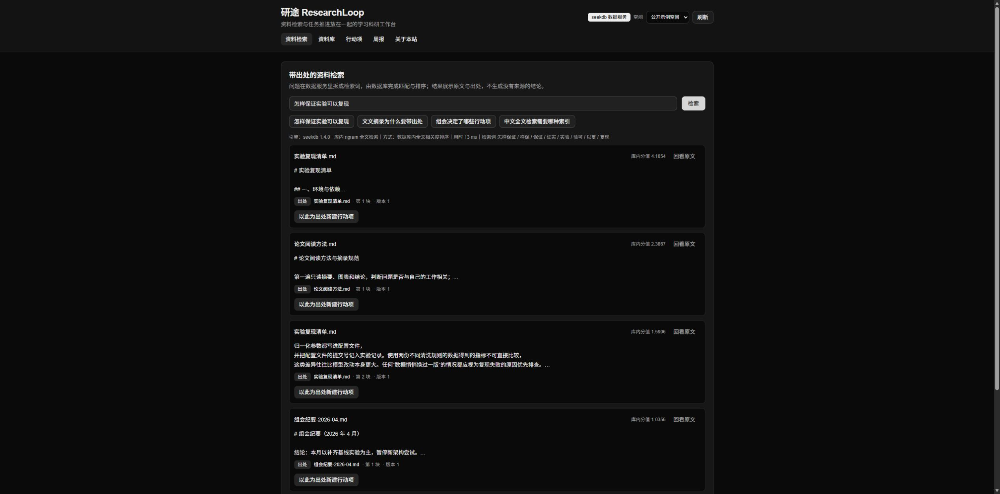
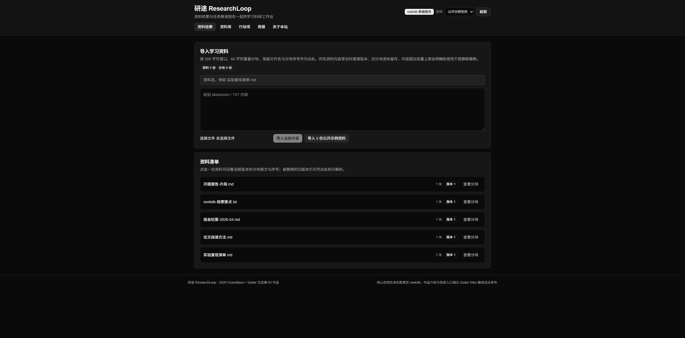
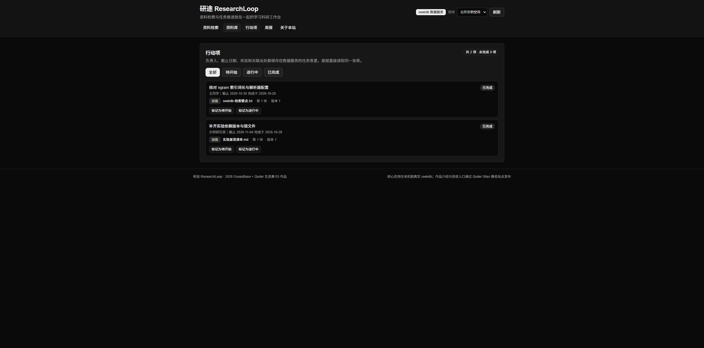
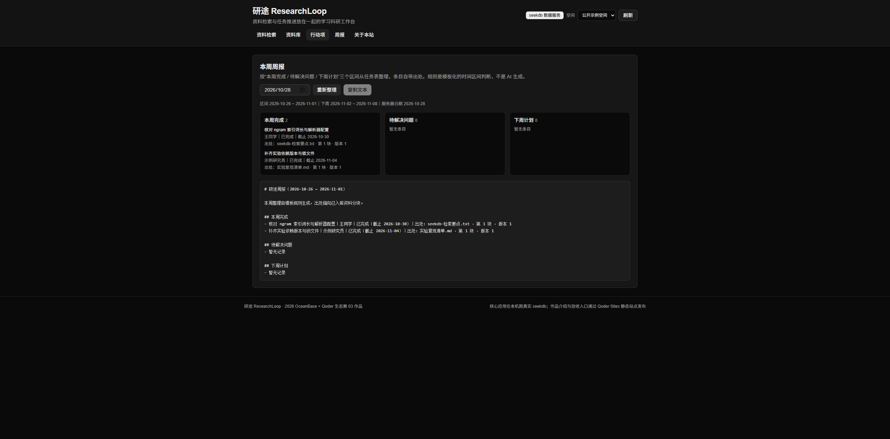

资料分散，结论查不到出处
论文摘录、实验记录、组会纪要散落在不同文件里。搜到一句话却无法回答「这句话来自哪份资料的第几段」，两周后就无法回查。
2026 OceanBase × Qoder 生态挑战赛 · 03 学习科研提效
把「带出处的资料检索」和「带负责人与截止日期的行动项」放进同一个工作台，周报直接读同一张任务表。
30 / 30
端到端断言全部通过（真实 seekdb）
1 条 SQL
MATCH … AGAINST 在库内过滤并排序中文检索
415 块
182,429 字符长资料完整入库，尾部仍可检索
版本锁定
同名资料改版后，历史出处仍可解析
论文摘录、实验记录、组会纪要散落在不同文件里。搜到一句话却无法回答「这句话来自哪份资料的第几段」，两周后就无法回查。
行动项记在待办里、依据记在笔记里。任务完成后想说明「当时依据是什么」，只能重新翻文件。
本周做了什么、还欠什么、下周做什么，全都要从纪要和待办里手动整理，条目还常常丢掉出处。
粘贴或选择 Markdown / TXT，按 500 字符窗口、60 字符重叠分块。出处三元组是「文件名 · 第 N 块 · 版本 R」。资料名与分块序号进入数据库，回看时能取到原文。
输入一句自然语言问题，中文按二元切分生成检索词交给数据库，由 MATCH(content) AGAINST(?) 在 seekdb 内完成过滤与相关度排序。页面只显示数据库返回的原文片段与出处，不生成任何没有出处的结论。
任一条命中结果都能作为出处创建任务：标题、负责人、截止日期、状态。行动项记住分块标识与当时的版本号，同一幂等键重复提交返回同一条记录。
按「本周完成 / 待解决问题 / 下周计划」三段整理，条目自带出处与逾期标记，纯文本可一键复制。周报按模板规则生成并在正文注明，不冒充 AI 生成内容。
React 前端（中文工作台）
Vite + React 19 + Tailwind 4。四个标签页：资料检索 / 资料库 / 行动项 / 周报，另有「关于本站」说明实现与验收步骤。只调用一组同源 /api/* 接口。
Node 核心服务
server/index.ts 把 node:http 请求转成 Web Request，交给与浏览器端共用的一份业务核心 functions/core/：分块、检索词生成、输入校验、版本策略、周报规则、HTTP 路由。服务本身不缓存任何业务数据。
seekdb 1.4.0 · 唯一承担业务数据的数据库
三张表：researchloop.rl_sources（资料与当前版本）、researchloop.rl_material_chunks（分块正文 + FULLTEXT INDEX … WITH PARSER ngram + revision + retired_at）、researchloop.rl_actions（行动项与出处引用，含 ref_chunk_revision）。
检索、过滤、排序全部在数据库内完成，进程内不做内存集合检索。
默认解析器对中文返回空结果，实测改用 ngram 全文索引（索引词长 2）后数据库能直接给出相关度分数。检索语句只有一条：
SELECT id, source_name, chunk_no, content,
MATCH(content) AGAINST(?) AS score
FROM researchloop.rl_material_chunks
WHERE workspace_id = ? AND retired_at IS NULL
AND MATCH(content) AGAINST(?)
ORDER BY score DESC LIMIT ?同名资料再次导入且内容变化时：版本号 +1，新分块写入，被替换的旧分块打上 retired_at 退休并保留在库中（不批量删除）。检索与列表只看当前版本；已有引用凭原始分块标识仍能解析，周报出处标注锁定的版本号。
内容长度超出分块容量上限时直接返回 material_too_large 并说明需要多少块，不静默丢弃尾部。
分块标识为 SHA-256(工作空间 | 资料名 | 块号 | 内容)，重复导入相同内容只更新不新增；行动项标识由调用方幂等键派生，网络结果未知时重试不会产生第二条。所有读写都以 workspace_id 为条件，公开示例空间与个人空间互不可见。
三段内容由任务状态、完成日期与截止日期推导，响应带 rule: "template" 标记，正文首行写明整理方式。每条条目带「出处：文件名 · 第 N 块 · 版本 R」，逾期条目额外标注。
验收脚本 server/verify-flow.ts 通过真实 HTTP 请求驱动核心服务与 seekdb，逐项断言并写出证据文件
researchloop/results/seekdb-verify.json。运行环境：Windows + WSL 内 seekdb 1.4.0（127.0.0.1:2881），
Node 22.20 运行核心服务（127.0.0.1:8788）。最近一次运行 30 项断言全部通过。
| 分组 | 断言 | 实测结果 |
|---|---|---|
| 后端真实性 | health.reports-seekdb |
backend = seekdb，label = 「seekdb 1.4.0 · 库内 ngram 全文检索」 |
| 导入与幂等 | import.* / import.idempotent-reimport |
5 份公开示例资料入库；重复导入 created = 0、skipped > 0、retired = 0、版本不变 |
| 检索质量 | search.returns-ranked-hits / search.hit-has-provenance |
retrieval = database-fulltext-ranked，tookMs ≈ 4–7；首位命中「实验复现清单.md · 第 1 块 · 版本 2」，score = 0.3441 |
| 空间隔离 | search.workspace-isolation |
未导入资料的空间返回 0 条命中 |
| 行动项闭环 | action.create-with-provenance / action.idempotent-retry / action.complete |
创建返回 201 且 ref_chunk_revision 与命中分块版本一致；同幂等键重试返回同一 id；完成后 completedAt 落库 |
| 周报 | report.contains-completed-action / report.declares-template-rule |
本周完成段落含该任务与「出处：…」；rule = template，区间 2026-10-26 ~ 2026-11-01 |
| 持久化 | state.persisted-in-seekdb |
重新读取 state：sources = 5、chunks = 6、actions > 0，数据全部来自数据库 |
| 失败路径 | search.empty-query-rejected / route.unknown-404 / import.over-length-rejected |
空问题 400 empty_query；未知路由 404；200,010 字符资料 400 material_too_large |
| 长文本不截断 | import.long-material-all-chunks / import.long-material-tail-searchable |
182,429 字符 → 415 块全部入库（旧实现会在 400 块处静默丢尾）；检索「尾部校验标记」命中第 415 块（chunkNo 414） |
| 版本与引用稳定性 | version.*（8 项） |
改版后 revision = 2、retired = 1；退休分块不再出现在检索结果；当前分块号唯一无重复；引用旧分块标识仍可创建行动项并锁定「版本 1」；周报出处显示「版本 1」 |
完整断言明细（含每条响应体）见代码仓库
qoder/researchloop/results/seekdb-verify.json。
验证用的 verify、verify-large、verify-version-* 空间与演示用的 public-demo、my-space 相互隔离。
以下截图拍摄自本机真实运行界面（Windows 桌面视口，连接 seekdb 1.4.0），依次覆盖导入资料 → 库内检索 → 行动项 → 周报的验收路径。




核心应用完全在本机运行，发布环境不需要、也不会连接云端 seekdb。以下步骤按 Windows + WSL 实测编写。
1. 启动 seekdb（WSL，127.0.0.1:2881）
# 一次性安装：官方镜像下载 → 校验 SHA-256 → 解包，不注册系统服务、不删除任何目录
wsl -d Ubuntu -- bash /mnt/e/project/oceanbase-ecosystem-2026/stepfun/scripts/install-seekdb-wsl.sh
# 启动（保持前台运行，数据目录位于 WSL 原生文件系统）
wsl -d Ubuntu -- bash /mnt/e/project/oceanbase-ecosystem-2026/stepfun/scripts/start-seekdb-wsl.sh确认端口可达：Windows 侧 netstat -ano | findstr 2881 出现 LISTENING。
2. 启动核心服务（真实数据库读写）
cd qoder/researchloop/server
npm ci
npm start # 监听 http://127.0.0.1:8788，首次启动自动建表并补齐版本列冒烟检查：curl http://127.0.0.1:8788/api/health 返回 "backend":"seekdb"。
3. 启动前端工作台
cd qoder/researchloop
npm ci
npm run dev # Vite 输出 http://127.0.0.1:5173，/api 代理到 8788浏览器打开该地址 →「资料库」→「导入 5 份公开示例资料」→「资料检索」问「怎样保证实验可以复现」。
4. 复跑端到端验收
cd qoder/researchloop
npm run verify # 真实 HTTP + 真实 seekdb，逐项断言并写 results/seekdb-verify.json期望末行输出「全部通过：30/30」。
5. 本地预览本介绍页（可选）
cd qoder/researchloop
npm run serve:site # http://127.0.0.1:4174 提供静态介绍页与截图生产构建：npm run build（先 tsc --noEmit 类型检查，再产出 dist/）。端口约定：seekdb 2881、核心服务 8788、前端 5173、介绍页 4174。
主体实现由 Qoder CLI 会话完成，过程记录写在 researchloop/DEVLOG.md（按实际推进顺序追加，不倒填）。
可复核的轨迹包括：Qoder Sites 能力核查、seekdb 中文检索实测脚本（server/probe.ts、
server/probe-fulltext.ts）、核心逻辑与前端实现、端到端验收脚本与其输出证据。
分块与「检索下推进数据库」的思路复用了同仓库 stepfun（04 题）的实测结论；
资料版本策略、行动项与周报为本赛题新实现。
代码仓库：sleepz1/powercontext · feature/researchloop-qoder（本作品位于 qoder/researchloop/）